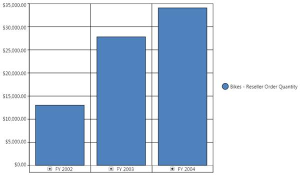

OlapChart includes a comprehensive set of more than 16 chart types for all your business needs.
The supported chart types are as follows:
· Column
· StackingColumn
· StackingColumn100
· Bar
· StackingBar
· StackingBar100
· Area
· StackingArea
· SplineArea
· StepArea
· Line
· Spline
· RotatedSpline
· StepLine
· Scatter
· Pie
The default chart type is Column chart. The following illustration shows a column chart:

Figure 42: A Column Chart
 Note: The ChartType must be set
before invoking the DataBind() method. Whenever you change the ChartType, you
need to call the DataBind() method to reflect the changes.
Note: The ChartType must be set
before invoking the DataBind() method. Whenever you change the ChartType, you
need to call the DataBind() method to reflect the changes.
 How to create a simple column chart?
How to create a simple column chart?
How to create a stacking column chart?
How to create a stacking column 100
chart?
How to create a stacking bar chart?
How to create a stacking bar 100 chart?
How to create a stacking area chart?
How to create a rotate spline chart?
How to create a step line chart?